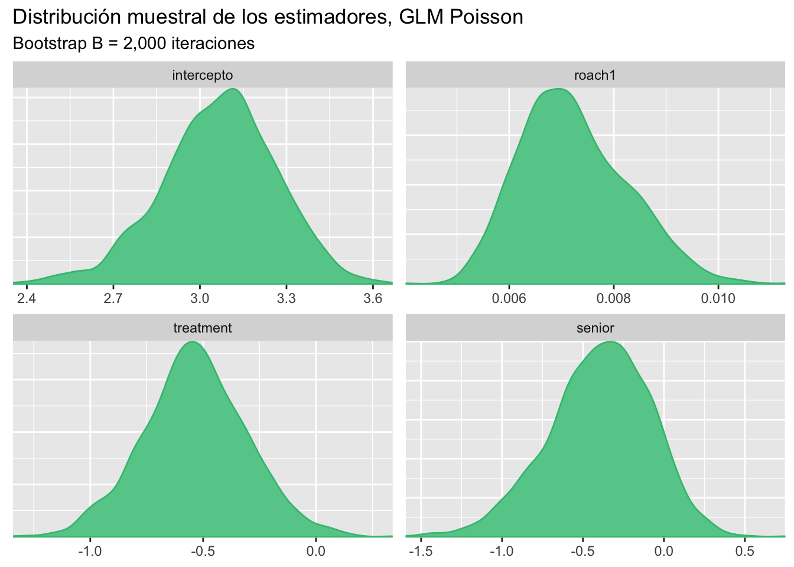

Code
library(caret)
library(GGally)
library(ggplot2)
library(rstanarm)
library(flextable)
library(bayesplot)
library(ggfortify)
bayesplot_theme_set(theme_grey())
data(roaches)Este post presenta un análisis la base `roaches`` usando un modelo lineal generalizado de conteo.
Se desea establecer la eficacia de cierto pesticida para el reducir el número de cucarachas en apartamentos urbanos. El tratamiento se aplicó a 158 de 262 apartamentos, y es el número de cucarachas atrapadas después de aplicar dicho tratamiento.
library(caret)
library(GGally)
library(ggplot2)
library(rstanarm)
library(flextable)
library(bayesplot)
library(ggfortify)
bayesplot_theme_set(theme_grey())
data(roaches)Los resultados del estudio se almacenan en la base de datos roaches, que contiene las siguiente variables.
y: número de cucarachas, después de aplicar el tratamiento. (Dependiente)
roach1: Número de cucarachas inicial.
treatment: Indicador de si recibió el tratamiento.
senior: Indicador si el residente era mayor.
eposure2: Número de días que se aplicó el tratamiento.
La variable y representa el número de cucarachas registradas al finalizar el tratamiento, dicha característica es representada por una v.a. discreta y positiva, y dicha característica debe ser considerada en el modelo.
mcmc_dens(roaches,pars = c("y","roach1"))+
labs(title = "Gráfico de densidades para el número de cucarachas",
subtitle = "Pre|Post tratamiento")Figure 1 muestra que ambas variables y y roach1 son positivas, con colas derechas muy pesadas, para este tipo de datos existen dos alternativas:
Modelar los datos con una distribución \log N(\mu,\sigma^2).
Modelar los datos con GLMs de conteo
En GLMs de conteo, la distribución mas popular debido a su simpleza es Poisson pero con una fuerte limitación que los datos poseen media y varianza iguales. Para medir los efectos del tratamiento mediante un GLM de conteo de Poisson definimos la verosimilitud de tal forma que:
y_i \sim \text{Poisson}(\mu_i),\quad g(\mu_i) = \log(\mu_i), \text{ y } \mu_i = \mu_0e^{\beta X_i}. Donde:
\mu_0 se le conoce como la información previo a la exposición.
g:\mathbb R \to \mathbb R, es la función de enlace logarítmica g(x) = \log x
y X son las covariables.
En un modelo log-normal, asumimos que los datos en escala logarítmica siguen un modelo normal
\log y_i\sim N(\mu_i,\sigma^2), \quad g(\mu_i) = \mu_i, \text{ y } \mu_i = \beta X_i. Es importante tener en cuenta que la función logarítmica es convexa, por ende no se puede aplicar la transformación inversa para obtener las predicciones en las escalas originales. Recordar que si y \sim \log N(\mu,\sigma^2) entonces:
E[y] = e^{\mu +1/2\sigma}. Finalmente realizamos un gráfico de correlaciones para identificar las interacciones lineales entre variables.
ggpairs(roaches )Figure 2 muestra resultados anti-intuitivos, se esperaría una alta correlación entre las variables y y roach1, dado que ambas miden la misma información pero en tiempos diferentes. Dado la poca correlación entre las variables consideramos un modelo completo que incluya todas las interacciones en el modelo.
Ajustamos el modelo GLM de conteo completo que consiste en usar todas las variables, y revisamos el ajuste e inferencia de los parámetros.
m1 = glm(y ~ roach1 + treatment + senior, offset = log(exposure2),
data = roaches, family = poisson)
summary(m1)
Call:
glm(formula = y ~ roach1 + treatment + senior, family = poisson,
data = roaches, offset = log(exposure2))
Deviance Residuals:
Min 1Q Median 3Q Max
-17.9430 -5.1529 -3.8059 0.1452 26.7771
Coefficients:
Estimate Std. Error z value Pr(>|z|)
(Intercept) 3.089e+00 2.123e-02 145.49 <2e-16 ***
roach1 6.983e-03 8.874e-05 78.69 <2e-16 ***
treatment -5.167e-01 2.474e-02 -20.89 <2e-16 ***
senior -3.799e-01 3.342e-02 -11.37 <2e-16 ***
---
Signif. codes: 0 '***' 0.001 '**' 0.01 '*' 0.05 '.' 0.1 ' ' 1
(Dispersion parameter for poisson family taken to be 1)
Null deviance: 16954 on 261 degrees of freedom
Residual deviance: 11429 on 258 degrees of freedom
AIC: 12192
Number of Fisher Scoring iterations: 6El modelo completo da una impresión con buenos resultados, todas las variables son significativas pero los residuos no están centrados en cero, por ende no cumplen los supuestos iniciales. El siguiente código genera una muestra Bootstrap para los parámetros del modelo M_1.
glm_boots = function(y,x,exposure,B = 1000){
n = length(y)
est = NULL
for (i in 1:B) {
si = sample(x = 1:n,size = n,replace = TRUE)
mli = glm(y[si]~x[si,], offset = log(exposure[si]),family = poisson)
ci = as.array(mli$coefficients)
est = rbind(est,ci)
}
# Estética
cn = colnames(x)
colnames(est) = c("intercepto",cn)
return(est)
}Obtenemos una muestra Bootstrap para los estimadores \hat \beta de tamaño B = 2,000 repeticiones
btp = glm_boots(y = roaches$y,
x = as.matrix(roaches[,2:4]),
exposure = roaches$exposure2,B = 2000)
color_scheme_set("green")
mcmc_dens(btp)+labs(title="Distribución muestral de los estimadores, GLM Poisson",
subtitle ="Bootstrap B = 2,000 iteraciones")
Los intervalos de confianza al 95% son:
x = apply(btp,MARGIN = 2, FUN = quantile, probs = c(0.025,0.5,0.975))
# Estética
x = data.frame( t(x) )
x$pars = c("intercepto","roach1","treatment","senior")
colnames(x) = c("q2.5%","Median","q97.5%","parámetros")
ft = flextable(x[c(4,1,2,3)])
autofit(ft)parámetros | q2.5% | Median | q97.5% |
intercepto | 2.649627708 | 3.068413734 | 3.432606996 |
roach1 | 0.005607099 | 0.007154547 | 0.009544093 |
treatment | -0.985689844 | -0.546835384 | -0.050803652 |
senior | -1.078203744 | -0.368706622 | 0.164622627 |
Los intervalos de confianza muestran que el efecto de la variable roach1 esta concentrado en cero, por lo tanto, se deberá considerar un GLM de Poisson excluyendo dicha variable.
Ajustamos el modelo GLM log-normal completo que consiste en usar todas las variables, y revisamos el ajuste e inferencia de los parámetros. Hay que tomar en cuenta que al tomar y y roach1 en escala logarítmica, se tendrán que descartar los valores infinitos obtenidos, dado que las distribuciones se acumulan en cero
df = roaches
df[,1:2] = log(df[,1:2])
df = subset(df,subset = df$y != -Inf & df$roach1 != -Inf)
m2 = lm(y~.,data = df)
summary(m2)
Call:
lm(formula = y ~ ., data = df)
Residuals:
Min 1Q Median 3Q Max
-3.0679 -1.0726 0.2976 0.9884 2.8697
Coefficients:
Estimate Std. Error t value Pr(>|t|)
(Intercept) 1.58442 0.40132 3.948 0.000122 ***
roach1 0.52136 0.06408 8.137 1.62e-13 ***
treatment -0.38609 0.21808 -1.770 0.078746 .
senior -0.38632 0.25848 -1.495 0.137187
exposure2 -0.19054 0.30949 -0.616 0.539082
---
Signif. codes: 0 '***' 0.001 '**' 0.01 '*' 0.05 '.' 0.1 ' ' 1
Residual standard error: 1.299 on 146 degrees of freedom
Multiple R-squared: 0.3315, Adjusted R-squared: 0.3132
F-statistic: 18.1 on 4 and 146 DF, p-value: 4.281e-12El modelo completo da una mala impresión,hay variables no significativas, el coeficiente de determinación \hat R = 0.31 es bastante cercano a cero, y los residuos no están centrados en cero, por ende no cumplen los supuestos iniciales. Finalmente, revisamos los residuos del modelo, dado que los supuestos de normalidad pueden ser evaluados.
autoplot(m2)
Figure 4 muestra que los supuestos de normalidad en su mayoría si se cumplen, el gráfico inferior izquierdo muestra un comportamiento irregular, pero debido a que una observación es anómala e influenciable, por lo tanto, otro modelo a considerar es usando una distribución Student-t con grados de libertad cercanos a v = 3.
La distribución Binomial negativa mide el número de éxitos que ocurren hasta el k-ésimo fracaso. Una v.a.d se distribuye Binomial Negativa (y_i \sim BN(k,p)) si:
f(y|p) = \binom{y+k-1}{y}(1-p)^k p^y.
Donde:
p es la probabilidad de éxito de un experimento Bernoulli.
k es el número de fracasos hasta tener el primer éxito
E[y_i] = \frac{pk}{1-p} es el valor esperado.
V[y_i] = \frac{pk}{(1-p)^2}, es la varianza.
Esta distribución se puede re-parametrizar en términos de su media E[y_i] = \mu y varianza V[y] = \sigma^2.
p = \frac{\sigma^2 - \mu}{\sigma^2},
k = \frac{\mu^2}{\sigma^2 - \mu}.
f(y) = \binom{y+\frac{\mu^2}{\sigma^2 - \mu}-1}{y}\left(\frac{\sigma^2 - \mu}{\sigma^2}\right)^y \left(\frac{\mu}{\sigma^2}\right)^{\frac{\mu^2}{\sigma^2 - \mu}}
Para medir los efectos del tratamiento mediante un GLM de conteo de Binomial negativa, definimos la verosimilitud de tal forma que:
y_i \sim BN(\mu_i,\sigma^2)\quad g(\mu_i) = \log(\mu_i), \text{ y } \mu_i = \mu_0e^{\beta X_i}.
Donde:
\mu_0 se le conoce como la información previo a la exposición.
g:\mathbb R \to \mathbb R, es la función de enlace logarítmica g(x) = \log x
y X son las covariables.
El modelo no tiene la limitante que la varianza es la media V[y_i] \neq \mu_i.
Ajustamos el modelo GLM de conteo completo que consiste en usar todas las variables, y revisamos el ajuste e inferencia de los parámetros.
library(MASS)
m3 = glm.nb(y ~ roach1 + treatment + senior + exposure2,data = roaches)
summary(m3)
Call:
glm.nb(formula = y ~ roach1 + treatment + senior + exposure2,
data = roaches, init.theta = 0.2717608411, link = log)
Deviance Residuals:
Min 1Q Median 3Q Max
-1.8052 -1.3452 -0.6815 -0.0344 3.1831
Coefficients:
Estimate Std. Error z value Pr(>|z|)
(Intercept) 2.393790 0.441811 5.418 6.02e-08 ***
roach1 0.012764 0.001601 7.975 1.52e-15 ***
treatment -0.764550 0.245659 -3.112 0.00186 **
senior -0.341062 0.264555 -1.289 0.19733
exposure2 0.435159 0.374132 1.163 0.24478
---
Signif. codes: 0 '***' 0.001 '**' 0.01 '*' 0.05 '.' 0.1 ' ' 1
(Dispersion parameter for Negative Binomial(0.2718) family taken to be 1)
Null deviance: 338.89 on 261 degrees of freedom
Residual deviance: 277.87 on 257 degrees of freedom
AIC: 1792.7
Number of Fisher Scoring iterations: 1
Theta: 0.2718
Std. Err.: 0.0259
2 x log-likelihood: -1780.7380 El modelo completo presenta mejores resultados que el modelo de Poisson pese que no todas las variables son significativas. Los residuos están centrados en cero y menos disperso, cumpliendo los supuestos iniciales.
Para seleccionar el mejor modelo usaremos validación cruzada, 5-fold, esto implica que ajustaremos cinco veces cada modelo, evaluando la capacidad de aprendizaje usando AIC, RMSE y MAE. Los modelos que se consideraran son los siguientes:
M_1: Modelo de Poisson completo
M_2: Modelo log-normal completo.
M_3: Modelo Binomial Negativa completo.
M_{3.1}: Modelo BN reducido, sin la variable roach1.
El siguiente código presenta una función para realizar k-fold-CV para cualquier valor de k. En caso de querer añadir otros modelos o criterios, la función deberá ser modificada.
kfold = function(df,k){
# Generar la particion
kfld = createFolds(df[,1],k = k)
mat = NULL
for (i in 1:k) {
# separar los datos en conjuntos de prueba y entrenamiento
dfE= df[-kfld[[i]],]
dfP = df[kfld[[i]],]
# Ajustar los modelos
m1 = glm(y ~ roach1 + treatment + senior, offset = log(exposure2),
data = dfE, family = poisson)
m3 = glm.nb(y ~ roach1 + treatment + senior + exposure2,data = roaches)
m31 = glm.nb(y ~ treatment + senior + exposure2,data = roaches)
p1 = predict(m1,dfP)
p3 = predict(m3,dfP)
p31 = predict(m31,dfP)
# Calcular AIC y RMSE
aic = c(
AIC(m1),
AIC(m3),
AIC(m31)
)
rmse = c(
RMSE(pred = p1,obs = dfP[,1]),
RMSE(pred = p3,obs = dfP[,1]),
RMSE(pred = p31,obs = dfP[,1])
)
mae = c(
MAE(pred = p1,obs = dfP[,1]),
MAE(pred = p3,obs = dfP[,1]),
MAE(pred = p31,obs = dfP[,1])
)
# Unir los datos
mat = rbind(mat,c(aic,rmse,mae))
}
colnames(mat) = c("AIC1", "AIC3", "AIC31",
"RMSE1","RMSE3","RMSE31",
"MAE1","MAE3","MAE31")
row.names(mat) = NULL
return(mat)
}Table 2 presenta los resultados obtenidos al realizar 5-fold-cv, bajo todos los criterios presentados, el modelo M_3 presenta las mejores predicciones. Por lo tanto, M_3 es el modelo con Mayor aprendizaje.
rst = kfold(df = roaches,k = 5)
x = t(apply(rst,MARGIN = 2,FUN = "quantile",probs = c(0.025,0.5,0.975)))
# Estética
x = data.frame(x)
x$pars = c("AIC1", "AIC3", "AIC31",
"RMSE1","RMSE3","RMSE31",
"MAE1","MAE3","MAE31")
colnames(x) = c("q2.5%","Median","q97.5%","Criterio")
ft = flextable(x[c(4,1,2,3)])
autofit(ft)Criterio | q2.5% | Median | q97.5% |
AIC1 | 8,945.08657 | 9,828.51100 | 10,041.34538 |
AIC3 | 1,792.73762 | 1,792.73762 | 1,792.73762 |
AIC31 | 1,834.89184 | 1,834.89184 | 1,834.89184 |
RMSE1 | 40.40095 | 53.82194 | 68.34730 |
RMSE3 | 40.32755 | 53.74815 | 68.03719 |
RMSE31 | 40.48745 | 53.82948 | 68.61177 |
MAE1 | 20.44436 | 24.42291 | 28.56326 |
MAE3 | 20.30973 | 24.35617 | 28.40859 |
MAE31 | 20.66577 | 24.53436 | 28.72089 |
Table 2 compara los modelos de conteo, se observa que en la mayoría de criterios el modelo Binomial Negativa completo, presenta los mejores resultados y el mejor ajuste, por lo tanto, seleccionamos al modelo M_3 que este deberá ser comparado con el modelo log-normal.
kfold1 = function(df,k){
# Generar la particion
kfld = createFolds(df[,1],k = k)
mat = NULL
for (i in 1:k) {
# separar los datos en conjuntos de prueba y entrenamiento
dfE= df[-kfld[[i]],]
dfP = df[kfld[[i]],]
# Ajustar los modelos
m2 = lm(y ~ .,data = dfE)
p2 = predict(m2,dfP)
# Unir los datos
mat = rbind(mat,c(AIC(m2),RMSE(pred = p2,obs = dfP[,1]),MAE(pred = p2,obs = dfP[,1])))
}
colnames(mat) = c("AIC1", "RMSE1","MAE1")
row.names(mat) = NULL
return(mat)
}
rst = kfold1(df = df,k = 5)
x = t(apply(rst,MARGIN = 2,FUN = "quantile",probs = c(0.025,0.5,0.975)))
# Estética
x = data.frame(x)
x$pars = c("AIC2", "RMSE2","MAE2")
colnames(x) = c("q2.5%","Median","q97.5%","Criterio")
ft = flextable(x[c(4,1,2,3)])
autofit(ft)Criterio | q2.5% | Median | q97.5% |
AIC2 | 408.952903 | 411.807307 | 420.114457 |
RMSE2 | 1.166367 | 1.295714 | 1.403174 |
MAE2 | 1.015279 | 1.082387 | 1.157660 |
Contrario a los esperado, el modelo log-normal M_2 presenta mejores resultados que los modelos de conteos, por lo tanto el mejor modelo para medir el efecto de tratamientos en cucarachas desde un enfoque de aprendizaje es el modelo log-normal.
Es importante resaltar que las predicciones realizadas con el modelo M_2 se realizaron en escala logarítmica,
RMSE = \frac{1}{\sqrt n}||\hat{\log (y_P)} -\log (y_P)||_2 Es necesario revisar si al transformar de forma inversa el modelo mantiene las predicciones. En caso de evaluar las predicciones en la escala natural de los datos, corroborar si:
RMSE = \frac{1}{\sqrt n}||e^{\mu_p+0.5\sigma} -y_P||_2 Donde \mu_P son las predicciones obtenidas del modelo en escala logarítmica.